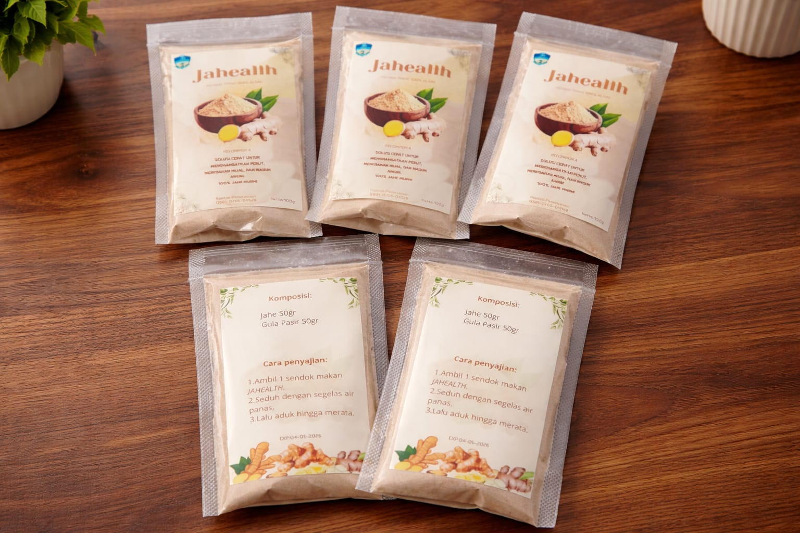

Curcufit
Immunity & Anti-Inflammatory Anchor
Dengan ini kami memperkenalkan minuman herbal yaitu "Curcufit". Secara umum masyarakat mengenalnga dengan sebutan kunir asem, kunir asem adalah minuman tradisional khas Indonesia yang termasuk dalam kategori jamu, dibuat dari bahan utama kunyit (kunir) dan asam jawa (asem). Minuman ini sudah lama dikenal dalam budaya Jawa sebagai minuman herbal yang menyegarkan sekaligus menyehatkan. Secara umum, kunir asem memiliki warna kuning cerah dari kunyit, dengan rasa perpaduan antara asam, manis, dan sedikit pahit. Biasanya ditambahkan gula jawa atau gula aren untuk menyeimbangkan rasa.
Immunity
Natural barrier reinforcement.
Recovery
Soothes systemic inflammation.
Composition
- Kunyit
- Gula Aren
- Gula Pasir
- Air
- Asam Jawa
- Garam
coffee Usage Instructions
Dinginkan dalam freezer atau tambahkan es batu agar menambah sensasi menyegarkan.

Jehealth
Vitality & Thermal Balance
Jahe bubuk adalah bentuk olahan dari jahe segar yang dikeringkan lalu digiling hingga menjadi serbuk halus. Produk ini digunakan sebagai bumbu dapur sekaligus bahan minuman herbal karena praktis dan tahan lama. Secara fisik, jahe bubuk berwarna krem hingga kuning pucat, bertekstur halus, dan memiliki aroma khas yang hangat serta rasa pedas yang lebih ringan dibanding jahe segar. Dari sinilah kami membuat inovasi baru "Jahaelth"
Warmth
Enhances peripheral circulation.
Stamina
Sustainable metabolic energy.
Composition
- Jahe
- Gula
coffee Usage Instructions
Ambil 1 sendok makan Jahealth lalu seduh dengan air panas dan aduk hingga merata.